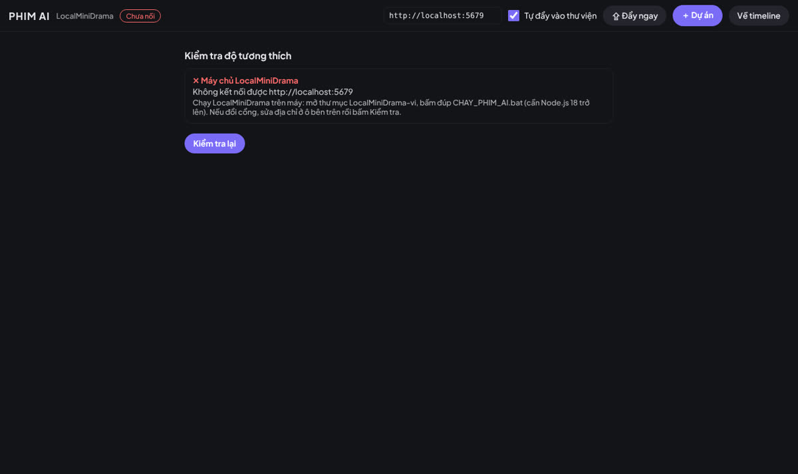
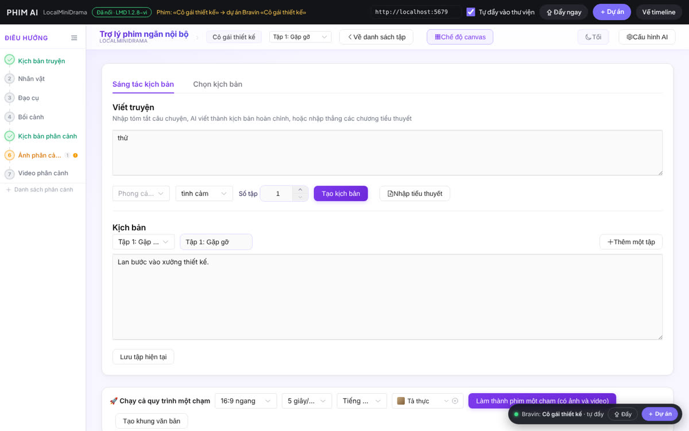
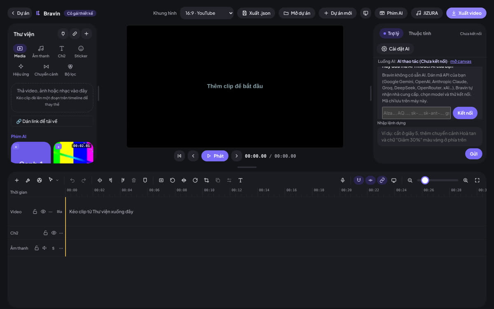

Làm phim ngắn bằng AI, tệp tự chạy vào timeline
Khu Phim AI đưa LocalMiniDrama (bản tiếng Việt) vào ngay trong Bravin. AI viết kịch bản, tách phân cảnh, tạo ảnh và video. Tệp nào tạo xong sẽ tự nằm trong thư viện Bravin để bạn dựng tiếp.
1Cần chuẩn bị gì
| Thứ cần có | Ghi chú |
|---|---|
| Máy tính Windows, macOS hoặc Linux | LocalMiniDrama chạy trên máy tính. Điện thoại dùng được qua Wi-Fi (xem mục 8). |
| Node.js 18 trở lên | Tải bản LTS ở nodejs.org, cài như phần mềm thường. |
| Bravin 4.10 | Bản web (trang này), bản Windows hoặc bản Android đều có khu Phim AI. |
| API Key của dịch vụ AI | Ít nhất một mô hình văn bản. Muốn có ảnh/video thì thêm mô hình ảnh và video (Volcengine Seedance, Kling, Gemini, Tongyi…). Bạn trả phí trực tiếp cho nhà cung cấp. |
| ffmpeg (không bắt buộc) | Chỉ cần khi ghép video cả tập. Xem mục 9. |
2Cài và chạy LocalMiniDrama
- Tải LocalMiniDrama-vi_1.2.8.zip rồi giải nén ra một thư mục, ví dụ
D:\LocalMiniDrama-vi. - Windows: bấm đúp
CHAY_PHIM_AI.bat.
macOS / Linux: mở Terminal trong thư mục đó, chạybash chay_phim_ai.sh. - Lần đầu, tập lệnh tự cài thư viện (vài phút, cần mạng). Các lần sau mở gần như ngay.
- Thấy dòng
Server started on port 5679là xong. Trình duyệt tự mởhttp://localhost:5679.
backend-node/data/, không gửi lên mạng.3Mở khu Phim AI trong Bravin
- Mở Bravin, mở hoặc tạo một dự án.
- Bấm nút Phim AI trên thanh trên cùng (cạnh JIZURA). Ở Trang chủ có thêm ô Phim AI trong phần công cụ.
- Bravin tự kiểm tra độ tương thích. Đạt hết thì giao diện LocalMiniDrama hiện ngay trong khu, góc trên có nhãn xanh Đã nối · LMD 1.2.8-vi.

CHAY_PHIM_AI.bat rồi bấm Kiểm tra lại.| Mục kiểm tra | Ý nghĩa |
|---|---|
| Máy chủ LocalMiniDrama | LocalMiniDrama đang chạy ở địa chỉ trong ô trên thanh (mặc định http://localhost:5679). |
| Cầu nối Bravin | Đúng bản LocalMiniDrama-vi đi kèm Bravin (bản gốc không có nút ＋ Dự án và tự đẩy). |
| Đọc tệp (CORS) | Bravin được phép tải ảnh/video từ LocalMiniDrama. |
| API dự án | Đọc được danh sách phim. |
| ffmpeg | Cảnh báo, không bắt buộc: cần để ghép video cả tập. |
| Ngôn ngữ AI | Cảnh báo, không bắt buộc: nên là tiếng Việt. |
4Nhập API Key cho AI
- Trong khu Phim AI, bấm Cấu hình AI (góc trên phải của LocalMiniDrama).
- Bấm một nút Cấu hình nhanh (Volcengine, Agnes, Tongyi…) để tạo sẵn bộ văn bản / ảnh / video, rồi dán API Key vào từng dòng. Hoặc bấm Thêm cấu hình để tự nhập nhà cung cấp tương thích OpenAI (DeepSeek, OpenRouter, Gemini…).
- Bấm Kiểm tra ở mỗi dòng. Báo xanh là dùng được.
5Làm một bộ phim
- Dự án mới → đặt tên phim, chọn tỉ lệ (9:16 cho TikTok/Reels, 16:9 cho YouTube).
- Kịch bản truyện: nhập tóm tắt, chọn thể loại, số tập → Tạo kịch bản. Hoặc Nhập tiểu thuyết: dán văn bản có dòng
Chương 1,Tập 2… AI tự tách tập. - Lần lượt theo cột trái: Nhân vật → Đạo cụ → Bối cảnh (trích từ kịch bản, tạo ảnh) → Kịch bản phân cảnh → Ảnh phân cảnh → Video phân cảnh.
- Muốn nhanh: dùng Chạy cả quy trình một chạm ở cuối trang. Mỗi bước tự thử lại tối đa 3 lần khi lỗi.
- Có ffmpeg thì bấm ghép để ra video cả tập.

6Tệp tự vào thư viện
Khi ô Tự đẩy vào thư viện đang bật, cứ khoảng 6 giây Bravin xem phim đang mở. Tệp nào LocalMiniDrama tạo thành công sẽ được nhập vào thư viện của dự án Bravin đang mở, trong nhóm Phim AI:
| Loại tệp | Tên trong thư viện |
|---|---|
| Ảnh phân cảnh | Phim AI · T1 · C03 · ảnh.png |
| Video phân cảnh | Phim AI · T1 · C03 · video.mp4 |
| Lồng tiếng thoại / thuyết minh | Phim AI · T1 · C03 · thoại.mp3, … · thuyết minh.mp3 |
| Ảnh nhân vật, bối cảnh, đạo cụ | Phim AI · Nhân vật · Lan.png… |
| Video cả tập | Phim AI · T1 · cả tập.mp4 |
T1 là tập 1, C03 là cảnh 3. Kéo tệp từ nhóm Phim AI xuống timeline như mọi tệp khác. Bấm Về timeline để dựng; khu Phim AI vẫn chạy ngầm và tiếp tục đẩy tệp mới.

7Nút ＋ Dự án
Đang làm phim nào trong LocalMiniDrama, bấm ＋ Dự án (góc dưới phải, hoặc trên thanh khu Phim AI). Bravin sẽ:
- lưu dự án đang mở;
- tạo dự án Bravin mới cùng tên với phim, khung hình theo tỉ lệ của phim;
- mở dự án đó và nhập sẵn mọi tệp phim đã có, từ đó tiếp tục tự đẩy tệp mới.
Mỗi lần bấm là một dự án mới. Muốn quay lại dự án cũ, mở nó ở Trang chủ Bravin.
8Dùng trên điện thoại
- Chạy LocalMiniDrama trên máy tính như mục 2. Điện thoại và máy tính dùng chung Wi-Fi.
- Xem địa chỉ IP của máy tính. Windows: mở Command Prompt, gõ
ipconfig, lấy dòng IPv4 Address, ví dụ192.168.1.5. - Trên app Bravin Android, mở Phim AI, sửa ô địa chỉ thành
http://192.168.1.5:5679, bấm ra ngoài để kiểm tra lại. - Lần đầu, Windows có thể hỏi cho phép Node.js qua tường lửa: chọn Private networks → Allow.
localhost). Muốn nối qua mạng nội bộ, dùng bản Android hoặc bản Windows.9Xử lý sự cố
| Hiện tượng | Cách xử lý |
|---|---|
| ✕ Máy chủ LocalMiniDrama | Chạy CHAY_PHIM_AI.bat, chờ dòng Server started on port 5679, bấm Kiểm tra lại. Đổi cổng thì sửa ô địa chỉ cho khớp. |
| Tập lệnh báo «Chua co Node.js» | Cài Node.js LTS ở nodejs.org, đóng rồi mở lại tập lệnh. |
| Cài thư viện thất bại | Kiểm tra mạng rồi chạy lại. Đừng chép thư mục node_modules từ máy khác. |
| ✕ Cầu nối Bravin | Bạn đang chạy LocalMiniDrama bản gốc. Dùng bản LocalMiniDrama-vi tải ở trang này. |
| ! ffmpeg | Chép ffmpeg.exe từ gói LocalMiniDrama gốc (backend-node/tools/ffmpeg/ffmpeg.exe) vào cùng chỗ trong LocalMiniDrama-vi, hoặc tải bản «essentials» ở gyan.dev và chép bin/ffmpeg.exe vào backend-node/tools/ffmpeg/. macOS/Linux: cài ffmpeg vào PATH. Chạy lại LocalMiniDrama. |
| Tệp không vào thư viện | Kiểm tra ô Tự đẩy vào thư viện đang bật và đang có dự án Bravin mở (tên hiện trên thanh). Phim mới nối lần đầu thì bấm ⇪ Đẩy ngay. |
| Bravin báo «Không mở được … » | Trình duyệt không đọc được định dạng video đó. Dùng Chrome hoặc Edge mới. |
| AI báo lỗi khoá / mô hình | Vào Cấu hình AI, bấm Kiểm tra từng dòng, sửa API Key hoặc tên mô hình. |
10Hỏi đáp
Phim và tệp của tôi có bị gửi lên mạng không?
Không. Kịch bản, ảnh, video lưu trong backend-node/data/ trên máy bạn. Chỉ nội dung gửi cho nhà cung cấp AI bạn tự cấu hình mới đi ra ngoài.
Có mất phí không?
LocalMiniDrama và Bravin miễn phí. Bạn trả phí API trực tiếp cho nhà cung cấp AI (tuỳ mô hình, video thường đắt nhất).
Ký hiệu @图片1 trong chế độ toàn năng là gì?
Đó là cú pháp mà Seedance 2.0 và Kling Omni yêu cầu để chỉ ảnh tham chiếu thứ 1, 2… Giữ nguyên, không dịch, và để một dấu cách sau nó.
Tắt Bravin rồi mở lại có mất tệp đã đẩy không?
Không. Tệp đã đẩy được lưu trong dự án Bravin trên thiết bị, như tệp bạn tự nhập.
Ai làm ra LocalMiniDrama?
LocalMiniDrama là phần mềm mã nguồn mở (giấy phép MIT) của xuanyustudio. Bravin bổ sung bản dịch tiếng Việt và cầu nối với Bravin, phát hành cùng giấy phép MIT.